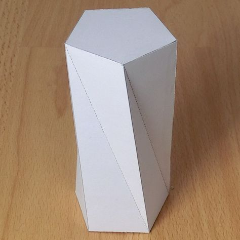

01
Sensor fusion
Integrated DHT11, PMS5003, LDR, KY-037 and PIR inputs create a richer room profile than any single measurement.
ATMOS
A polished ESP32-S3 system that senses air quality, temperature, light, sound and motion — then makes real hardware decisions through relays, firmware and a Flutter dashboard.
ATMOS is built for dependable embedded automation, combining local sensor awareness with mobile-ready visibility.
Core controller that keeps the system live even when the app is offline.
Temperature, humidity and particle sensing for safer indoor air.
Light and sound sensing for adaptive lighting and noise awareness.
Motion-based triggers and physically switched outputs for real-world actuation.
Localized control
The ESP32-S3 keeps ATMOS responsive by evaluating rules locally, so the system stays active even when the network does not.
Embedded integrity
Sensor inputs, relays and motion detection work together to match physical spaces, not just app screens.
Clear visibility
Flutter UI and live status reporting let operators monitor room conditions and outputs from anywhere.
About ATMOS
ATMOS combines a compact ESP32-S3 board with a curated suite of sensors and relay outputs. It senses climate, air quality, light, sound and occupancy, then acts on that data through dependable firmware rules and a polished Flutter dashboard.
The project is designed for environments where responsiveness matters: local decision making at the edge, meaningful room context, and a clear presentation layer for operators.
Built by an embedded systems team, ATMOS brings firmware, hardware integration and mobile UX together in a single, extendable system.
ATMOS is a climate and environment control system that turns sensor data into real-world outputs, combining monitoring and automation in one professional package.
We are a team of embedded engineers, electrical integrators and app designers focused on making embedded systems that feel modern, reliable and easy to understand.
How it works
Integrated DHT11, PMS5003, LDR, KY-037 and PIR inputs create a richer room profile than any single measurement.
The ESP32-S3 evaluates sensor states locally, so actions happen immediately and reliably.
Relay outputs switch fans, lights, locks and motors with confirmed feedback to the app.
Sensors & boards
Keep scrolling — panels peel apart one component at a time.

The project brain — Wi-Fi, firmware logic, and relay orchestration run locally so ATMOS stays responsive even when the app disconnects.

Temperature and humidity readings feed climate-aware rules — trigger fans, adjust relays, and keep indoor comfort within safe bounds.

Laser particle sensing tracks PM2.5 levels in real time, enabling ventilation and filtration responses before air quality becomes a problem.

Precision lux measurement drives adaptive lighting — dim when daylight is sufficient, brighten when rooms need it.

High-fidelity I2S audio capture for noise monitoring, voice triggers, and security awareness without dedicated analog modules.

Passive infrared detection triggers occupancy-based automations — lights, fans, and security modes that respond to presence, not schedules.

Every sensor, relay channel, and firmware rule comes together in one compact build — extendable by design as new inputs and outputs are added.
Demo
See sensor acquisition, relay activation, and the Flutter dashboard reflecting real-time state in a complete embedded control loop.
Drop a video named atmos-demo.mp4 into assets/videos/ or update the source path.
System overview
Build gallery


Team
ATMOS was designed and built by a five-person team extending across firmware, hardware integration, and mobile UX. The goal was a dependable embedded control system with a professional presentation layer.
The project showcases clean sensor wiring, a smart relay interface, and a Flutter dashboard that makes environment control accessible and reliable.
Let’s connect
Reach out for a walkthrough, source access, or collaboration on further embedded deployments.